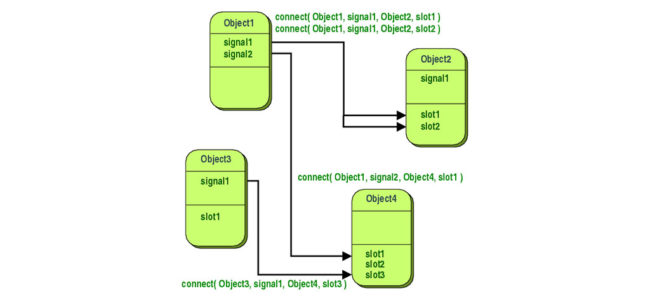

Благодаря сигналам и слотам можно с легкостью связать 2 и более различных виджета или метода в Qt. При этом не обязательно чтобы один сигнал был связан только с одним слотом, их комбинация может быть разной. К примеру, к одному сигналу можно подключить 2 и более слота, и наоборот к одному слоту может быть подключено неограниченное количество сигналов. Так же в Qt поддерживается и такая связь, когда один сигнал генерирует другой сигнал.

Схема подключения сигнала к слоту
connect(отправитель,
SIGNAL(метод, генерирующий сигнал на какое-либо событие),
получатель,
SLOT(метод, который принимает сигнал и выполняет какие-то действия с данным сигналом));
отправитель - указатель на объект, созданный оператором new.
SIGNAL метод - метод, выполнение которого генерирует сигнал. Например, клик мышкой или нажатие клавиши.
получатель - указатель на объект, созданный оператором new.
SLOT метод - метод, который выполняет определенные действия, используя параметры сигнала.
Пример:
Старая форма записи через макросы (компилятор не найдет ошибки в случае опечатки):
connect(closeButton, SIGNAL(clicked()), this, SLOT(close()));
Новая форма записи:
connect(closeButton, QPushButton::clicked(), this, &MainWindow::close());
Кнопка, закрывающая окно при нажатии на нее. Получатель тот же, что и отправитель - closeButton.
Схема подключения сигнала к сигналу
connect(отправитель,
SIGNAL(метод, генерирующий сигнал на какое-либо событие),
получатель,
SIGNAL(метод, который принимает сигнал и генерирует другой сигнал));
Подключения одного сигнала к нескольким слотам:
connect(slider, SIGNAL(valueChanged(int)), spinBox, SLOT(setValue(int)));
connect(slider, SIGNAL(valueChanged(int)), this, SLOT(updateStatusBarIndicator(int)));
Выше показан пример как можно один и тот же сигнал использовать для нескольких слотов. Важно понимать, что при генерировании сигнала последовательно вызываются все слоты, причем порядок их вызова не определен.
Пример подключения одного слота к нескольким сигналам:
connect(lcd, SIGNAL(overflow)), this, SLOT(handleMatchError));
connect(calculator, SIGNAL(divisionByZero()), this, SLOT(handleMatchError());
Слоту совсем не важно какой будет к нему подключен сигнал и наоборот, важно только, чтобы типы данных совпадали у сигнала со слотом. По такому же принципу можно подключить сигнал к сигналу.
Пример подключения одного сигнала к другому сигналу:
connect(lineEdit, SIGNAL(textChanged(const QString &)), this,
SIGNAL(updateRecord(const QString &)));
Способ подключения сигнала к сигналу практически ничем не отличается от подключения сигнала к слоту, важно только то, чтобы параметры при соединении совпадали по типу и по количеству. Конечно, есть исключение, когда у сигнала отправителя больше параметров чем у сигнала, который принимает, в этом случае лишние параметры будут просто опущены. А если у сигнала отправителя недостает параметров, или они не совместимы с сигналом-слотом получателем, то во время сборки или отладки будет предупреждение о несовместимости параметров.
Связь можно аннулировать при помощи метода disconnect();
disconnect(slider, SIGNAL(valueChanged(int)), spinBox, SLOT(setValue(int)));
Способ отключения сигнала от его создания практически ничем не отличается, только вместо метода connect используется метод disconnect. При удалении объекта Qt автоматически производит отключение сигнала от слота. По этой причине использовать метод disconnect приходится крайне редко.
Механизм сигнал-слот реализован в классе QObject, и его не обязательно применять только к QWidget'ам в пределах программирования графического пользовательского интерфейса. Этот механизм можно использовать в любом подклассе QObject.
int getSalary() const { return mySalary; }
void setSalary(int newSalary);
void salaryChanged(int newSalary);
void Employee::setSalary(int newSalary)